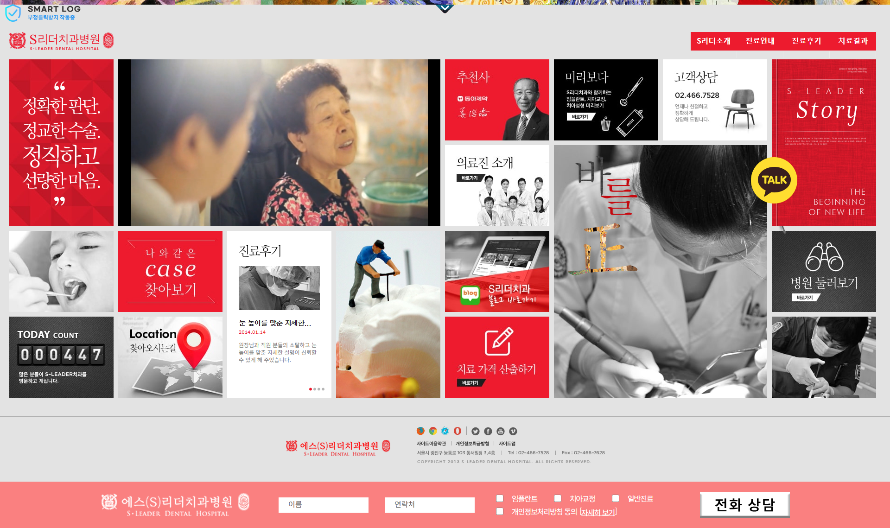
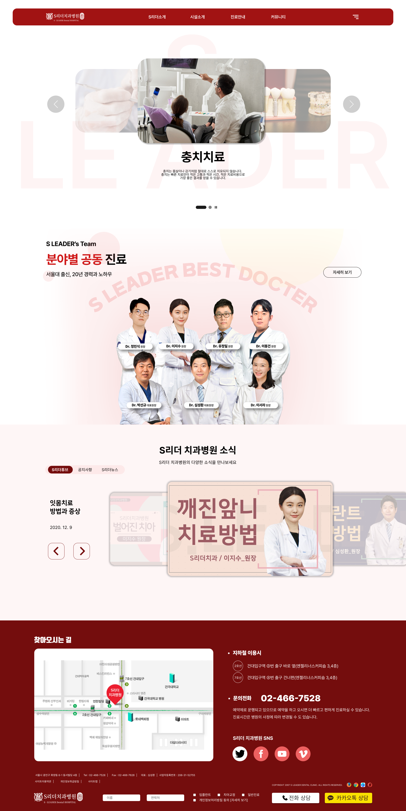
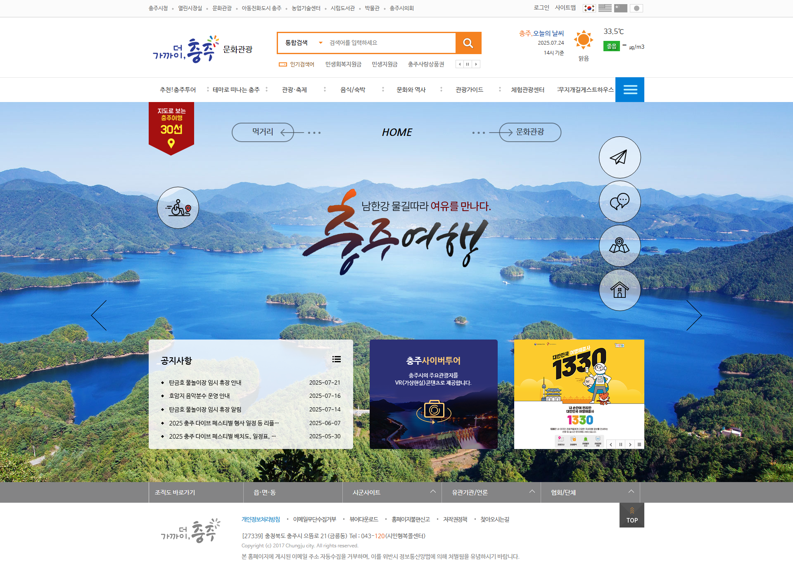

아이디어를 현실로,
경험을 가치로
감각 있는 UI를 구현하는
웹 디자이너
안녕하세요, 이유리입니다.
사용자 경험을 최우선으로 고려하며
세련된 인터페이스와
안정적인 코드를 만드는 것을 좋아합니다.
디자인 감각과 개발 능력을 겸비한 크리에이터로 성장하고 있습니다.
주요 이력
- 2019~2020 - 미래인재개발원 Ui/UX 웹 디자인 교육 이수
- 2021~2024 - 구미김천기획인쇄사 근무
- 2025~ - UX/UI 반응형 웹디자인 & 웹 퍼블리셔 (디자인 & 코딩) 교육 이수
자격/어학
- 2021.04 - 웹디자인기능사
- 2017.04 - GTQ포토샵1급
- 2018~2019 - OPIC IM 1급, JLPT 1급, JPT 775점
My Design Philosophy
단순히 보기 좋은 것을 넘어서,
문제를 해결하는 디자인을 지향합니다.
-
01 사용자 중심 사고 디자인의 출발점은 늘 사용자입니다.
-
02 시각적 일관성과 미감 브랜드의 감성을 표현하고, 쉽게 인지될 수 있도록 디자인합니다.
-
03 감성 + 기능의 균형 보여주는 디자인을 넘어, 실제로 ‘작동하는’ UI를 만듭니다.
-
04 테스트 & 개선 꼼꼼한 검토와 개선으로 완성도 높은 결과를 추구합니다.
사용자 인터뷰 메모와 페르소나 구성 예시입니다.
브랜드의 감성을 감안한 목업 디자인 입니다.

Figma로 만든 스타일 가이드와 UI 시안입니다.
끊임없는 테스트로 오류없고 디자인적으로도 완벽한 사이트를 추구합니다.
Ability to possess

편집 디자인
브랜딩, 인쇄물, 프로모션 디자인까지
정갈하면서 임팩트 있는
결과물을 만듭니다.

웹 & UI 디자인
반응형 웹, 앱 UI, 프로토타입까지
사용자 경험을 고려한
인터페이스를 설계합니다.

모션 & 영상 디자인
브랜드 소개, SNS 영상, 모션 그래픽 등
스토리가 있는 영상을
제작합니다.
Group Task: Project
웹 사이트 리디자인 프로젝트
1. 문제 인식
기존 화면의 한눈에 안 들어오는 난잡한 UI와 낮은 접근성이 사용자 이탈로 이어지고 있었음
2. 역할 분담 및 기획
역할 분담 후, UI/UX 개선 방향을 설정하고 리서치 수행 후 좋은 참고가 될 래퍼런스 사이트 탐색
3. 리디자인 수행
내비게이션 구조 개선, 주요 화면 와이어프레임 및 프로토타입 제작
4. 결과 및 회고
정보 접근성이 2배 이상 향상되었고 사용자 피드백도 긍정적이었음
✨ 나의 기여
- 주요 역할: UI 설계 및 프로토타입 제작
- 툴: Figma, Photoshop, powerpoint
- 성과: 깔끔한 디자인과 한눈에 들어오는 사이트 목적으로 만족도 상승을 기대
PROJECT CASE STUDY
클론 코딩: 삼성화재
삼성화재 공식 사이트 메인 페이지를 그대로 구현했습니다.
클론 코딩: 국제커리어센터

국제 커리어 센터 메인 페이지를 그대로 구현했습니다.
리디자인: S리더 치과병원
Before
After
복잡했던 정보구조를 단순화하고 CTA를 강화해 사용성을 개선했습니다.
리디자인: 충주시 문화관광
Before
After

시각적으로 복잡한 날씨 UI를 미니멀하고 직관적으로 리디자인했습니다.
Contect Zones
COLLABORATION
브랜딩 & 편집디자인
로고, 패키지, 인쇄물 등 브랜드 아이덴티티에 맞춘 시각 디자인
웹 & UI 디자인
와이어프레임부터 프로토타입, 반응형 웹 UI까지 전반 설계
영상 & 모션 그래픽
SNS 콘텐츠, 소개 영상, 인터랙티브 모션 구현
협업이 필요하다면 아래에 메세지를 남겨주세요.
이메일 및 SNS
안녕하세요!
디자인으로 가치를 전달하는
UI 디자이너 이유리입니다.
함께 멋진 프로젝트 만들어봐요!